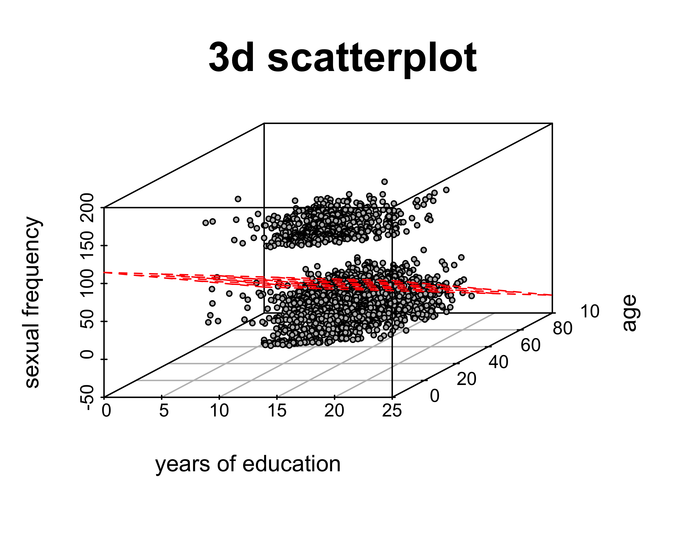

The Power of Controlling for Other Variables
In the previous module, I showed that the OLS regression line predicting sexual frequency by years of education was 0.03. So in my dataset, there is a very small positive association between sexual frequency and years of education.
Its possible that this is a causal effect. We could even spin stories about why we think such a positive association (a very small one) might exist. Maybe more educated people appear sexier to the opposite sex. Maybe more educated people take better care of themselves and thus are healthier and more able to have sex. Maybe more educated people are just more sexually liberated.
Before we get carried away however its important to consider whether our results might be spurious. Its possible that the positive association between years of education and sexual frequency is driven by a third variable that we haven’t accounted for. This is a common problem in research using observational data. Association does not necessarily mean causation because of the potential for other variables to account for our observed association (and because of the possibility of reverse causation). We refer to such variables as lurking or confounding variables.
In this case, the potentially confounding variable that we need to consider is age. Lets look at the association between age and each of our other variables (sexual frequency and education).
cor(sex$sexf,sex$age)## [1] -0.3974668cor(sex$educ,sex$age)## [1] -0.06018569Age is negatively correlated with sexual frequency. We have observed this relationship before and it is not terribly surprising. Older people have less sex, on average. The negative correlation between age and years of education is perhaps a little more surprising. Older people have less education than younger people, on average. This may seem surprising to you because as you get older you have more opportunity to complete more education. However, you have to remember that the data we have are a snapshot in time. We are not tracking individuals over time as they age, but rather looking at differences between older and younger people at a single point in time. This kind of data is often called a cross-sectional dataset. Because we are looking at a single point in time, the age differences really reflect differences in birth cohorts or what people often loosely call “generations.” Remember that this dataset is from 2004. The difference between a 20 year old and a 60 year old is that the 20 year old was born in 1984 and the 60 year old was born in 1944.
Because we are comparing birth cohorts, the differences in educational attainment reflect history more than life cycle. Older cohorts were less educated than younger birth cohorts. On average, you will be more educated than your parents and your parents were more educated than your grandparents. Thus, the correlation between age and education is negative.
These two negative correlations suggest a spurious reason why we might observe a positive association between sexual frequency and education. Younger people have more education and younger people have more sex. Thus, when we look at the relationship between sexual frequency and education, we see a positive association but that positive association is indirectly driven by youth and the association of youth with both education and sex.
How can we examine whether this potential spurious explanation is accurate? It turns out that we can add more than one independent variable to an OLS regression model at the same time. The mathematical structure of such a model would be:
\[\hat{frequency}_i=b_0+b_1(education_i)+b_2(age_i)\]
We now have two different “slopes”, \(b_1\) and \(b_2\). These two slopes give the association of education and age, respectively, on sexual frequency, while controlling for the other independent variable. We now have what is called a multivariate OLS regression model.
This “controlling” concept is a key point that I will return to below, but first I want to try to think graphically about what this model is doing. In the case of bivariate regression, we thought of fitting a line to a scatterplot in two-dimensional space. We are doing something similar here, but since we now have three variables, our scatterplot is in three dimensions.

The dependent variable is shown on the vertical (z) axis and the two independent variables are shown on the “width” and “depth” axes (x and y). The red dashes show a flat plane across the data. The OLS regression model equation above defines this plane, rather than a single line. So, rather than fitting a straight line through the data, I am fitting a plane. Note however that if I could rotate the 3d scatterplot to hide the age “depth” dimension and in that case it would look like a two-dimensional scatterplot and the edge of the plane would look like a line that describes the relationship between education and sexual frequency. Similarly, I could rotate it the other way to look at the relationship between age and sexual frequency.
How do I know what are the best values for b0, b1, and b2 that define my plane? The logic is the same as for bivariate OLS regression: I choose values that minimize the sum of squared residuals (SSR):
\[SSR=\sum_{i=1}^n (\hat{y}_i-y_i)^2\]
SSR is a measure of how far the predicted values of the dependent variable are from the actual values, so we want the intercept and slopes that minimizes this error. Unlike the bivariate case, however, there is no simple formula that I can give you for the slope and intercept, without some knowledge of matrix algebra. However, R can calculate the correct numbers for you easily. I am not concerned with your technical ability to calculate these numbers by hand, but I do want you to understand why those are the “best” numbers. They are the best numbers because they minimize the sum of the squared residuals for the model.
We can calculate this model in R just by adding another variable to our model in the lm command:
model <- lm(sexf~educ+I(age-18), data=sex)
coef(model)## (Intercept) educ I(age - 18)
## 91.062080 -0.427747 -1.303385Note that as I did in the previous module, I am re-centering age on 18 years so that I have reasonable value for the interpretation of the intercept. In equation form, our model will look like:
\[\hat{frequency}_i=91.06-0.43(education_i)-1.30(age_i-18)\]
Interpreting results in a multivariate OLS regression models
How do we interpret the results?
- Intercept: The model predicts that 18-year old individuals at with no education will have 91.06 sexual encounters per year, on average.
- Education Slope: The model predicts that, holding age constant, an additional year of education is associated with 0.43 fewer sexual encounters per year, on average.
- Age Slope: The model predicts that, holding education constant, an additional year of age is associated with 1.3 fewer sexual encounters per year, on average.
The intercept is now the predicted value when all independent variables are zero. My interpretation of the slopes is almost identical to the bivariate case, except for one very important addition. I am now estimating the effect of each independent variable on the dependent variable while holding constant all other independent variables. You could also say “controlling for all other independent variables.”
What does it mean to “hold other variables constant?” It means that when we look at the effect of one independent variable, we are looking at how the predicted value of the dependent variable changes while keeping all the other variables the same. For instance, the education effect above is the effect of a one year increase in education among individuals of the same age. Because we are looking at the effect of education among individuals of the same age, age should no longer have a confounding effect on our estimate of the effect of education. Thus holding constant/controlling for other variables helps to remove the potential spurious effect of those variables as confounders.
Note how the effect of education on sexual frequency changed once I included age as a control variable. Before controls, I estimated a slightly positive slope (0.03) but now I am estimating a substantial negative slope (-0.43). So my understanding of the relationship between education and sexual frequency is completely reversed. When you compare individuals of the same age, more educated individuals have less sex, on average, than less educated individuals.
Crime example
Lets build a regression model where we predict the property crime rate in a state by the percent of adults in the state without a high school diploma and the median age of the state’s residents.
summary(lm(Property~PctLessHS+MedianAge, data=crimes))##
## Call:
## lm(formula = Property ~ PctLessHS + MedianAge, data = crimes)
##
## Residuals:
## Min 1Q Median 3Q Max
## -1080.38 -376.78 12.19 346.82 1600.56
##
## Coefficients:
## Estimate Std. Error t value Pr(>|t|)
## (Intercept) 5136.66 1411.21 3.640 0.000666 ***
## PctLessHS 69.47 24.79 2.803 0.007286 **
## MedianAge -83.31 35.30 -2.360 0.022368 *
## ---
## Signif. codes: 0 '***' 0.001 '**' 0.01 '*' 0.05 '.' 0.1 ' ' 1
##
## Residual standard error: 567.2 on 48 degrees of freedom
## Multiple R-squared: 0.2495, Adjusted R-squared: 0.2182
## F-statistic: 7.977 on 2 and 48 DF, p-value: 0.001021Note that I am giving you the full output of summary now, but we can find the slopes and intercept by looking at the Estimate column of the “Coefficients” table. “Coefficients” is another term for slopes and intercepts because that it the technical term for these values in the regression model equation.
The model is:
\[\hat{crime}_i=5137+69(pctlesshs_i)-83(medianage_i)\]
The model predicts that, comparing two states with the same median age of residents, a one percent increase in the percent of the state with less than a high school diploma is associated with an increase of 69 property crimes per 100,000, on average. The model predicts that, comparing two states with the same percentage of adults without a high school diploma, a one year increase in the median age of a state’s residents is associated with a decrease of 83 property crimes per 100,000, on average.
Note that we also get the \(R^2\) value from the summary command. In multivariate models, the \(R^2\) value always tells you what proportion of the variation in the dependent variable is accountable for by variation in all of the independent variables combined. In this case \(R^2\) is 0.2495. About 25% of the variation in property crime rates across states is accountable for by variation in the percent of adults without a high school diploma and the median age of residents across states.
Including more than two independent variables
If we can include two independent variables in a regression model, why stop there? Why not include three or four or more? The number of independent variables you can include is only limited by the sample size (you can never have more independent variables than the sample size minus one), although in practice we generally stop well short of this limit for pragmatic reasons.
Lets take the model above predicting property crime rates by percent of adults with less than a high school diploma and the median age of residents. Lets add the poverty rate as another predictor:
summary(lm(Property~PctLessHS+MedianAge+Poverty, data=crimes))##
## Call:
## lm(formula = Property ~ PctLessHS + MedianAge + Poverty, data = crimes)
##
## Residuals:
## Min 1Q Median 3Q Max
## -1174.43 -236.69 -30.96 286.41 1218.77
##
## Coefficients:
## Estimate Std. Error t value Pr(>|t|)
## (Intercept) 4240.38487 1383.49276 3.065 0.0036 **
## PctLessHS 0.04504 36.07642 0.001 0.9990
## MedianAge -73.27098 33.68882 -2.175 0.0347 *
## Poverty 97.67933 38.52145 2.536 0.0146 *
## ---
## Signif. codes: 0 '***' 0.001 '**' 0.01 '*' 0.05 '.' 0.1 ' ' 1
##
## Residual standard error: 537.6 on 47 degrees of freedom
## Multiple R-squared: 0.3398, Adjusted R-squared: 0.2976
## F-statistic: 8.063 on 3 and 47 DF, p-value: 0.0001947The model predicts:
- A one percent increase in the percent of adults in a state without a high school diploma is associated with 0.05 more property crimes per 100,000, on average, holding constant the median age of residents and the poverty rate in a state. This result is about as close to zero as you will find.
- A one year increase in the median age of a state’s residents is associated with 73 fewer property crimes per 100,000, on average, holding constant the percent of adults without a high school diploma and the poverty rate in a state.
- A one percent increase in a state’s poverty rate is associated with 98 more crimes per 100,000, on average, holding constant the percent of adults without a high school diploma and the median age of residents in a state.
- 34% of the variation in property crime rates across states can be accounted for by variation in the percent of adults without a high school diploma, residents’ median age, and the poverty rates across states.
When I interpret the models now, I am holding constant the other two variables when I estimate the effect of each. Note that controlling for the poverty rate has a huge effect on the education variable whose effect goes from a substantial positive effect to basically zero effect. What does this tell us? Poverty rates and high school dropout rates are positively correlated and so when you don’t control for poverty rates, it looks like the high school dropout rate predicts crime because states with high high school dropout rates have high poverty rates and high poverty rates predict property crime rates. Once you control for the poverty rate, you see that it is economic deprivation not educational deprivation that is driving the crime rate.
In general, the form of the multivariate regression model is:
\[\hat{y}_i=b_0+b_1x_{i1}+b_2x_{i2}+b_3x_{i3}+\ldots+b_px_{ip}\]
The intercept is given by \(b_0\). This is the predicted value of \(y\) when all of the independent variables are zero. The remaining \(b\)’s give the slopes for all of the variables up through the \(p\)th variable. Each of these gives the predicted change in \(y\) for a unit increase in that independent variable, holding all other independent variables constant.
How to read a table of regression results
In academic journal articles and books, the results of OLS regression models are represented in a fairly standard way. In order to understand how to read these articles, you need to understand this presentation style. Its not immediately intuitive for everyone. The table below shows the typical style. In this table, I am reporting three regression models with the property crime rates as the dependent variable and three different independent variables.
| (1) | (2) | (3) | |
| Percent Less than HS | 78.83*** | 69.47*** | 0.05 |
| (25.58) | (24.79) | (36.08) | |
| Median Age | -83.31** | -73.27** | |
| (35.30) | (33.69) | ||
| Poverty Rate | 97.68** | ||
| (38.52) | |||
| Constant | 1,892.85*** | 5,136.66*** | 4,240.38*** |
| (335.33) | (1,411.21) | (1,383.49) | |
| Observations | 51 | 51 | 51 |
| R2 | 0.16 | 0.25 | 0.34 |
| Note: | p<0.1; p<0.05; p<0.01 | ||
| Standard errors in parenthesis | |||
When reading this table and others like it, keep the following issues in mind:
- The first question you should ask is “what is the dependent variable?” This is the outcome that we are trying to predict. Typically, the dependent variable will be listed in the title of the table. In this case, the title tells you that the dependent variable is property crime rates and the unit of analysis is US states.
- The independent variables are listed on the rows of the table. In this case, I have independent variables of percent less than HS, median age, and the poverty rate. As I will explain below, just because an independent variable is listed here does not mean that it is actually included in all models.
- The term “constant” is a synonym for “intercept.”
- Models are listed in each column of the table. If numbers are listed for the row of a particular independent variable then that variable is included in that particular model. In this case, I have three different models. The first model only has numbers listed for Percent less than HS, so that is the only independent variable in the first model. The second model has numbers listed for Percent less than HS and Median Age, so both of these variables are included in the model. The third model includes all three variables in the model. Remember that in each case the dependent variable is the property crime rate.
- Within each cell with numbers listed there is a lot going on. We are primarily interested in the main number listed at the top. This number is the slope (or intercept in the case of the “Constant” row). The number in parenthesis is the standard error for each slope in the model. You could use this standard error and the slope estimate above it to calculate t-statistics and p-values exactly. However, the asterisks give you an easy visual short cut to determine the rough size of the p-value. These asterisks indicate if the p-value is below a certain level, as shown in the notes at the bottom. The cut-offs of 0.05, 0.01, and 0.001 used here are pretty standard for the discipline. So an asterisks generally means that the result is “statistically significant.” However, its important to keep in mind as noted above that these cut-offs are ultimately arbitrary and should never be confused with the substantive size of the effect itself.
- At the bottom, you typically get a number of summary measures of the model. The only two we care about are the number of observations and the \(R^2\) of the model.